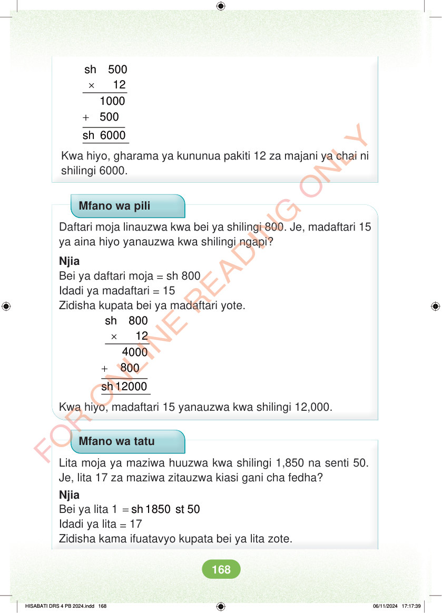

× sh 500 12 + sh 6000 Kwa hiyo, gharama ya kununua pakiti 12 za majani ya chai ni shilingi 6000. Mfano wa pili Daftari moja linauzwa kwa bei ya shilingi 800. Je, madaftari 15 ya aina hiyo yanauzwa kwa shilingi ngapi? Njia Bei ya daftari moja = sh 800 Idadi ya madaftari = 15 Zidisha kupata bei ya madaftari yote. × sh 800 12 + 8 00 sh 12000 Kwa hiyo, madaftari 15 yanauzwa kwa shilingi 12,000. Mfano wa tatu Lita moja ya maziwa huuzwa kwa shilingi 1,850 na senti 50. Je, lita 17 za maziwa zitauzwa kiasi gani cha fedha? Njia Bei ya lita 1 = sh 1850 st 50 Idadi ya lita = 17 Zidisha kama ifuatavyo kupata bei ya lita zote. HISABATI DRS 4 PB 2024.indd 168 HISABATI DRS 4 PB 2024.indd 168 06/11/2024 17:17:39 06/11/2024 17:17:39